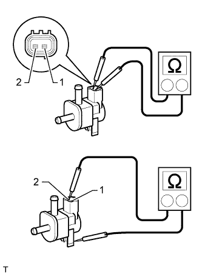
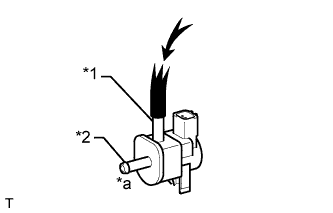
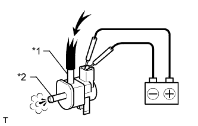

КЛАПАН ПРОДУВКИ АДСОРБЕРА > ПРОВЕРКА |
| 1. ПРОВЕРЬТЕ ЭЛЕКТРОВАКУУМНЫЙ КЛАПАН ПРОДУВКИ |
|  |
Измерьте сопротивление в соответствии со значениями, приведенными в таблице ниже.
| Контакты для подключения диагностического прибора | Состояние | Заданные условия |
| 1 - 2 | 20°C (68°F) | 23 - 26 Ом |
| 1 - масса | Всегда | 10 МОм или более |
| 2 - масса | Всегда | 10 МОм или более |
Проверьте работу электровакуумного клапана продувки.
|  |
Убедитесь, что воздух из патрубка Е не поступает в патрубок F.
| *1 | Канал E |
| *2 | Канал F |
| *a | Нет потока |
 | Давление воздуха |
|  |
Подайте напряжение аккумуляторной батареи на разъем и проверьте работу VSV.
| Условия измерений | Заданные условия |
| Положительный (+) вывод аккумуляторной батареи → вывод 1 Отрицательный (-) вывод аккумуляторной батареи → вывод 2 | Воздух из патрубка E поступает в патрубок F |
| *1 | Канал E |
| *2 | Канал F |
| Давление воздуха |